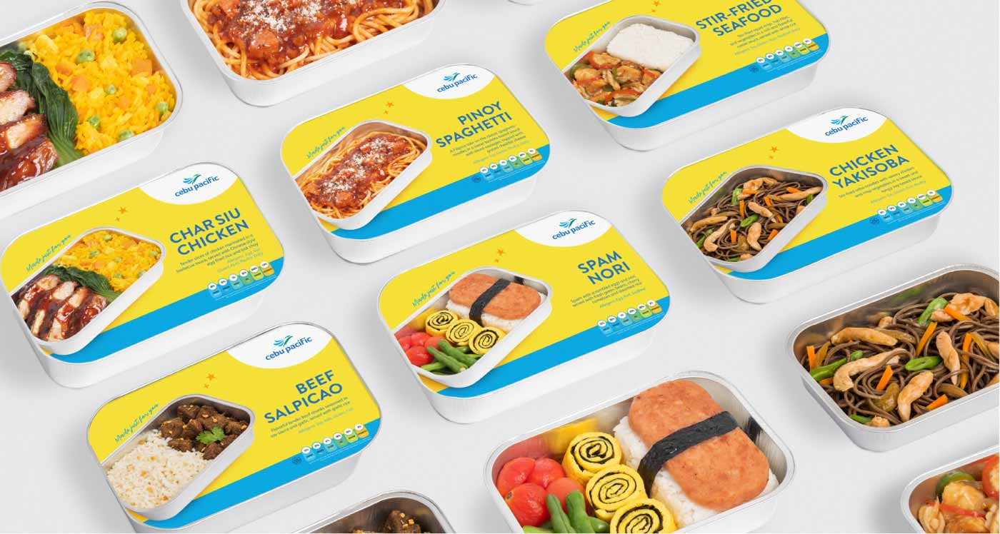

Client
| Cebu Pacific Air
Task
| Modernize and refresh the in-flight collaterals to align with the airlines’ bright persona
Cebu Pacific is known as a young, low cost carrier airline, with its striking yellow and blue that attracts young passengers, it was time to refresh their in-flight merch to suit the market and their vision.
The task was to liven up their in-flight materials, such as their menu and the packaging for meals. Fresh and dynamic food shots were utilized for the menus to whet the appetite of travellers. This was combined with playful illustrations to put fun and emotion to the materials.
